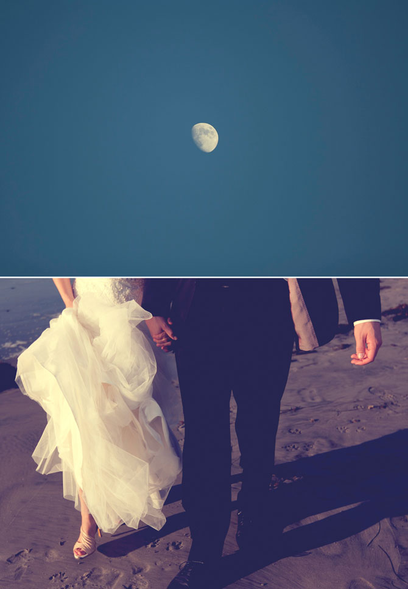

|
Meet Tina and Logan. They met in Aspen, Colorado the year before I went as a pianist to study at the summer music festival there. And, several years later, they became lifelong pals. Logan drew that picture a long time ago, way before his Aspen days in college. His mother was very proud. So proud that she framed it.
Everyone was a little teary. So, we climbed into a limo to party ourselves to Balboa Park. Tina showed us her post-it note vows.
Back at the Del Mar Powerhouse, Logan nervously milled about. Giving a trombone performance in front of hundreds? Psh, easy. Getting married?...Yeah.
Tina and Logan abandoned the guests and rolled around in the sand and squished their feet into kelp.
The sun set as they danced.
A couple on the beach got engaged as soon as the newlyweds ended their dance.
Meanwhile, the children played.
Logan apparently liked to play with his food, also.
As is customary in Korean tradition, the elders threw chestnuts and dates into their traditional garments so as to determine how many children they'd produce. By the looks of it, they will have about 11 boys and girls.
 The night ended but they couldn't be happier. |


|
All contents of this website © 2012 Kristina Jacinth. All rights reserved.